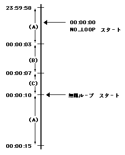

書式： $num week month day hour minute second解説
num : アニメーション系列の番号 week : 曜日 (0=日曜、1=月曜、...、6=土曜) month : 月 (1〜12) day : 日 (1〜31) hour : 時 (0〜23) minute : 分 (0〜59) second : 秒 (0〜59) (例) $1,* 3 * 6-11 * 1,3-10,15
#コマンドで記述した各アニメーション系列の開始タイミングを記述します。
曜日、月、日、時、分、秒は、それぞれ " " (スペース)で区切って記述します。
それぞれ、以下の３種類の記述を使用できます。
n1,n2 : n1およびn2 n1-n2 : n1からn2のすべて * : すべて (例) week (曜日) にて
(注) 「4-1」としても、(4,5,6,0,1)とはならない。「0-1,4-6」と記述すること。
3 : 3のみ 3,6 : 3,6 3-6 : 3,4,5,6 1,3-6 : 1,3,4,5,6 * : 0,1,2,3,4,5,6 (0-6と同じ)
アニメーション系列が無限ループ (NO_LOOP指定有り)と１回のみ再生 (NO_LOOP指定無し) とで、動作が異なります。
●無限ループの場合
指定したタイミングの間、アニメーション系列を再生します。●１回のみ再生の場合(例)
$1,* * * * * *
1番のアニメーション系列を、すべての時間で再生します$3,* * * * * 00-30
3番のアニメーション系列を、毎曜、毎月、毎日、毎時、毎分、00秒〜30秒の間再生します。$2,* * * * 1 *
2番のアニメーション系列を、毎曜、毎月、毎日、毎時、1分00秒〜1分59秒の間再生します。
指定したタイミングで、アニメーション系列を再生します。(例)
$1,* * * * * *
1番のアニメーション系列を、すべての時間で再生します。
(無限ループになってしまう→適切な使用ではない)$3,* * * * * 00-30
3番のアニメーション系列を、毎曜、毎月、毎日、毎時、毎分、00秒〜30秒の間再生します。
(00秒〜30秒の間、ループしてしまう→適切な使用ではない)$2,* * * * 1 0
2番のアニメーション系列を、毎曜、毎月、毎日、毎時、1分00秒で1回のみ再生する
#NO_LOOP指定ありの系列と#NO_LOOP指定無しの系列が同時に再生条件に適合した場合、#NO_LOOPありの系列が再生されます。
#NO_LOOP指定有りの系列が複数適合した場合は、最も下の$コマンドの系列が再生されます。
#NO_LOOP指定有りの系列で適合するものがなく、#NO_LOOP指定無しの系列が複数指定された場合、最も下の$コマンドの系列が再生されます。(例) 系列1,2は#NO_LOOP指定無し(無限ループ)、系列3,4は#NO_LOOP指定有り (1回のみ再生)#NO_LOOP指定無しの系列の再生は、その時点で再生しているアニメーション系列の最終行の再生が終了した時点で行われます。$1,* * * * * 10-50毎時・毎分・10秒〜20秒は系列1、20秒〜40秒は系列2、40秒〜50秒は系列1を再生。
$2,* * * * * 20-40
$3,* * * * * 0
$4,* * * * 0 0
毎時・毎分・0秒に系列3を再生、ただし毎時0分0秒には系列4を再生
#NO_LOOP指定有りの系列の再生は、指定時間ちょうどに行われます。(例)(A) #1,5000,"A.bmp",0,0アニメーション系列#1は、A (5秒) → B (4秒) → C (3秒) → A (5秒) と無限ループ(NO_LOOP指定無し)します。
(B) #1,4000,"B.bmp",0,0
(C) #1,3000,"C.bmp",0,0
$2,* * * 0 0 0
また、アニメーション系列#2は、0時0分0秒に開始する指定です。23時59分58秒にアニメーション系列#1のAが開始したとして、アニメーション系列2は以下のタイミングとなります。・#2がNO_LOOP指定あり(1回だけ再生)の場合 → 0時0分0秒ちょうど・#2がNO_LOOP指定なし(無限ループ)の場合 → (C)の再生終了の 00:00:10 に再生開始